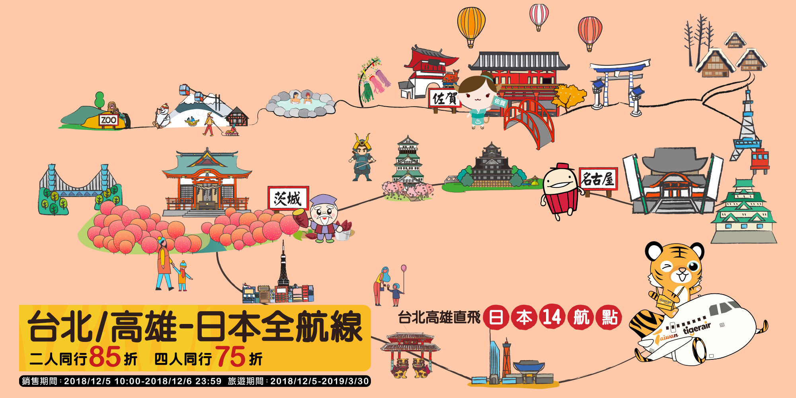
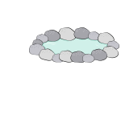

航線圖
北海道地區
旭川
函館
東北地區
花卷
仙台
中部地區
小松
名古屋
關東地區
東京
茨城
關西地區
大阪
岡山
九州&沖繩
福岡
佐賀
沖繩
玩日本 台灣虎航好方便
北海道地區
北海道第二大城－
旭川
日本三大夜景－
函館
東北地區

銀河鐵道的故鄉－
花卷
日本最好吃的牛舌－
仙台
中部地區
走跳北陸更方便－
小松
孕育三大武將－
名古屋
關東地區
百去不膩多變之都－
東京
捻花惹草不可錯過－
茨城
關西地區
單玩跳點都好玩－
大阪
不只是桃太郎故鄉－
岡山
九州&沖繩
日本最美星巴克在此－
福岡
阿嬤超級魅力也超級－
佐賀
周末輕旅行好選擇－
沖繩